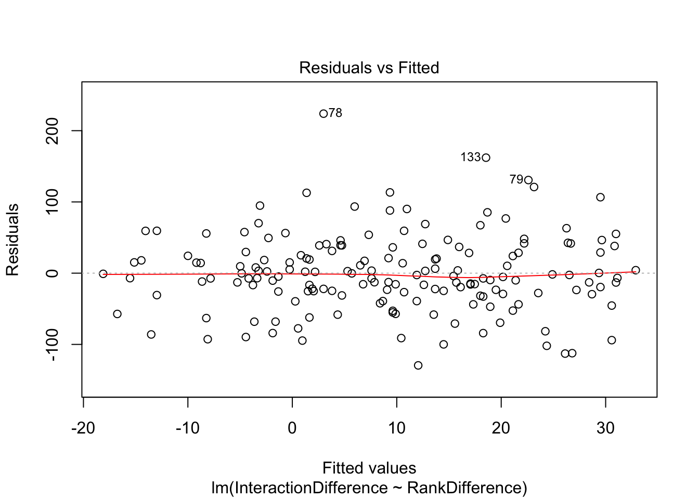

Last updated: 2019-07-24
Checks: 6 1
Knit directory: Comparative_eQTL/analysis/
This reproducible R Markdown analysis was created with workflowr (version 1.4.0). The Checks tab describes the reproducibility checks that were applied when the results were created. The Past versions tab lists the development history.
The R Markdown file has unstaged changes. To know which version of the R Markdown file created these results, you’ll want to first commit it to the Git repo. If you’re still working on the analysis, you can ignore this warning. When you’re finished, you can run wflow_publish to commit the R Markdown file and build the HTML.
Great job! The global environment was empty. Objects defined in the global environment can affect the analysis in your R Markdown file in unknown ways. For reproduciblity it’s best to always run the code in an empty environment.
The command set.seed(20190319) was run prior to running the code in the R Markdown file. Setting a seed ensures that any results that rely on randomness, e.g. subsampling or permutations, are reproducible.
Great job! Recording the operating system, R version, and package versions is critical for reproducibility.
Nice! There were no cached chunks for this analysis, so you can be confident that you successfully produced the results during this run.
Great job! Using relative paths to the files within your workflowr project makes it easier to run your code on other machines.
Great! You are using Git for version control. Tracking code development and connecting the code version to the results is critical for reproducibility. The version displayed above was the version of the Git repository at the time these results were generated.
Note that you need to be careful to ensure that all relevant files for the analysis have been committed to Git prior to generating the results (you can use wflow_publish or wflow_git_commit). workflowr only checks the R Markdown file, but you know if there are other scripts or data files that it depends on. Below is the status of the Git repository when the results were generated:
Ignored files:
Ignored: .DS_Store
Ignored: .Rhistory
Ignored: .Rproj.user/
Ignored: analysis/.DS_Store
Ignored: analysis/20190521_eQTL_CrossSpeciesEnrichment_cache/
Ignored: analysis/figure/
Ignored: analysis_temp/.DS_Store
Ignored: code/.DS_Store
Ignored: code/snakemake_workflow/.DS_Store
Ignored: data/.DS_Store
Ignored: data/PastAnalysesDataToKeep/.DS_Store
Ignored: docs/.DS_Store
Ignored: docs/assets/.DS_Store
Untracked files:
Untracked: GSEA_eQTL.pdf
Untracked: Rplot01.pdf
Unstaged changes:
Modified: analysis/20190521_eQTL_CrossSpeciesEnrichment.Rmd
Modified: analysis/20190613_PowerAnalysis.Rmd
Modified: analysis/20190708_DiffContactsEgenes_CisWindowControlled.Rmd
Modified: analysis/20190716_VarianceInsteadOfEgenes.Rmd
Note that any generated files, e.g. HTML, png, CSS, etc., are not included in this status report because it is ok for generated content to have uncommitted changes.
These are the previous versions of the R Markdown and HTML files. If you’ve configured a remote Git repository (see ?wflow_git_remote), click on the hyperlinks in the table below to view them.
| File | Version | Author | Date | Message |
|---|---|---|---|---|
| Rmd | 34e6b4f | Benjmain Fair | 2019-07-11 | update site |
| html | 34e6b4f | Benjmain Fair | 2019-07-11 | update site |
library(tidyverse)
library(knitr)
library(corrplot)
library(gplots)
library(pROC)
library(qvalue)
library(reshape2)
library(gridExtra)SampleA<- read.csv(gzfile("../data/IttaiHomerInteractionScoresInCisWindows/adj_bins_25_A-21792_10kb_norm.gz"), sep='\t')
SampleB<- read.csv(gzfile("../data/IttaiHomerInteractionScoresInCisWindows/adj_bins_25_B-28126_10kb_norm.gz"), sep='\t')
SampleC<- read.csv(gzfile("../data/IttaiHomerInteractionScoresInCisWindows/adj_bins_25_C-3649_10kb_norm.gz"), sep='\t')
SampleD<- read.csv(gzfile("../data/IttaiHomerInteractionScoresInCisWindows/adj_bins_25_D-40300_10kb_norm.gz"), sep='\t')
SampleE<- read.csv(gzfile("../data/IttaiHomerInteractionScoresInCisWindows/adj_bins_25_E-28815_10kb_norm.gz"), sep='\t')
SampleF<- read.csv(gzfile("../data/IttaiHomerInteractionScoresInCisWindows/adj_bins_25_F-28834_10kb_norm.gz"), sep='\t')
SampleG<- read.csv(gzfile("../data/IttaiHomerInteractionScoresInCisWindows/adj_bins_25_G-3624_10kb_norm.gz"), sep='\t')
SampleH<- read.csv(gzfile("../data/IttaiHomerInteractionScoresInCisWindows/adj_bins_25_H-3651_10kb_norm.gz"), sep='\t')
HumanInteractions <- data.frame(H.Score = rowSums(cbind(SampleA, SampleB, SampleE, SampleF))) %>%
rownames_to_column() %>%
mutate(HumanID = gsub("(.+?)\\..+?", "\\1", rowname, perl=T))
ChimpInteractions <- data.frame(C.Score = rowSums(cbind(SampleC, SampleD, SampleG, SampleH))) %>%
rownames_to_column("ChimpID")Ok now read in eQTL data…
eQTLs <- read.table(gzfile("../data/PastAnalysesDataToKeep/20190521_eQTLs_250kB_10MAF.txt.gz"), header=T)
# List of chimp tested genes
ChimpTestedGenes <- rownames(read.table('../output/ExpressionMatrix.un-normalized.txt.gz', header=T, check.names=FALSE, row.names = 1))
ChimpToHumanGeneMap <- read.table("../data/Biomart_export.Hsap.Ptro.orthologs.txt.gz", header=T, sep='\t', stringsAsFactors = F)
kable(head(ChimpToHumanGeneMap))| Gene.stable.ID | Transcript.stable.ID | Chimpanzee.gene.stable.ID | Chimpanzee.gene.name | Chimpanzee.protein.or.transcript.stable.ID | Chimpanzee.homology.type | X.id..target.Chimpanzee.gene.identical.to.query.gene | X.id..query.gene.identical.to.target.Chimpanzee.gene | dN.with.Chimpanzee | dS.with.Chimpanzee | Chimpanzee.orthology.confidence..0.low..1.high. |
|---|---|---|---|---|---|---|---|---|---|---|
| ENSG00000198888 | ENST00000361390 | ENSPTRG00000042641 | MT-ND1 | ENSPTRP00000061407 | ortholog_one2one | 94.6541 | 94.6541 | 0.0267 | 0.5455 | 1 |
| ENSG00000198763 | ENST00000361453 | ENSPTRG00000042626 | MT-ND2 | ENSPTRP00000061406 | ortholog_one2one | 96.2536 | 96.2536 | 0.0185 | 0.7225 | 1 |
| ENSG00000210127 | ENST00000387392 | ENSPTRG00000042642 | MT-TA | ENSPTRT00000076396 | ortholog_one2one | 100.0000 | 100.0000 | NA | NA | NA |
| ENSG00000198804 | ENST00000361624 | ENSPTRG00000042657 | MT-CO1 | ENSPTRP00000061408 | ortholog_one2one | 98.8304 | 98.8304 | 0.0065 | 0.5486 | 1 |
| ENSG00000198712 | ENST00000361739 | ENSPTRG00000042660 | MT-CO2 | ENSPTRP00000061402 | ortholog_one2one | 97.7974 | 97.7974 | 0.0106 | 0.5943 | 1 |
| ENSG00000228253 | ENST00000361851 | ENSPTRG00000042653 | MT-ATP8 | ENSPTRP00000061400 | ortholog_one2one | 94.1176 | 94.1176 | 0.0325 | 0.3331 | 1 |
# Of this ortholog list, how many genes are one2one
table(ChimpToHumanGeneMap$Chimpanzee.homology.type)
ortholog_many2many ortholog_one2many ortholog_one2one
2278 19917 140351 OneToOneMap <- ChimpToHumanGeneMap %>%
filter(Chimpanzee.homology.type=="ortholog_one2one")
HumanLeadSnps <- read.table(gzfile('../data/Heart_Left_Ventricle.v7.250kB.leadsnps.txt.gz'), col.names = c("gene", "snp", "tss.dist", "ma_samples", "ma_count", "maf", "p", "slope", "slope_se"))
# Read gtex heart egene list
# Only consider those that were tested in both species and are one2one orthologs
GtexHeartEgenes <- read.table("../data/Heart_Left_Ventricle.v7.egenes.txt.gz", header=T, sep='\t', stringsAsFactors = F) %>%
left_join(HumanLeadSnps, by=c("gene_id"="gene")) %>%
mutate(gene_id_stable = gsub(".\\d+$","",gene_id)) %>%
filter(gene_id_stable %in% OneToOneMap$Gene.stable.ID) %>%
mutate(chimp_id = plyr::mapvalues(gene_id_stable, OneToOneMap$Gene.stable.ID, OneToOneMap$Chimpanzee.gene.stable.ID, warn_missing = F)) %>%
filter(chimp_id %in% ChimpTestedGenes)
ChimpToHuman.ID <- function(Chimp.ID){
#function to convert chimp ensembl to human ensembl gene ids
return(
plyr::mapvalues(Chimp.ID, OneToOneMap$Chimpanzee.gene.stable.ID, OneToOneMap$Gene.stable.ID, warn_missing = F)
)}First question: do the ~300 chimp eGenes have more contacts in their cis-window in chimp
Chimp_OrderedGenes <- eQTLs %>%
mutate(HumanID = ChimpToHuman.ID(gene)) %>%
group_by(gene) %>%
dplyr::slice(which.min(qvalue)) %>%
filter(gene %in% GtexHeartEgenes$chimp_id) %>%
left_join(GtexHeartEgenes, by=c("gene"="chimp_id")) %>%
dplyr::select(gene, qvalue, p, qval, HumanID) %>% as.data.frame() %>%
filter(qvalue <0.1) %>%
mutate(ChimpRank = dense_rank(qvalue)) %>%
mutate(ChimpRelativeRank = ChimpRank/max(ChimpRank)) %>%
mutate(HumanRank = dense_rank(qval)) %>%
mutate(HumanRelativeRank = HumanRank/max(HumanRank)) %>%
mutate(RankDifference = HumanRank-ChimpRank)
# OneToOneMap %>%
# inner_join(HumanInteractions, by=c("Gene.stable.ID"="HumanId")) %>% dim()
# inner_join(ChimpInteractions, by=c("Chimpanzee.gene.stable.ID"="ChimpID")) %>% dim()
# right_join(Chimp_OrderedGenes, by=c("Chimpanzee.gene.stable.ID"="gene")) %>% dim()
Chimp_OrderedGenes.WithContactInfo <- Chimp_OrderedGenes %>%
left_join(HumanInteractions, by=c("HumanID")) %>%
left_join(ChimpInteractions, by=c("gene"="ChimpID")) %>%
mutate(InteractionDifference=H.Score - C.Score)
ggplot(Chimp_OrderedGenes.WithContactInfo, aes(x=InteractionDifference)) +
stat_ecdf(geom = "step") +
xlab("Difference in contacts over chimp eGene cis-windows\n(Positive means more contact in chimp)") +
ylab("Cumulative frequency") +
theme_bw()
| Version | Author | Date |
|---|---|---|
| 34e6b4f | Benjmain Fair | 2019-07-11 |
ggplot(Chimp_OrderedGenes.WithContactInfo, aes(x=RankDifference, y=InteractionDifference)) +
geom_point() +
theme_bw() +
xlab("Rank Difference in eGene significance\nMore in human <-- --> More in chimp") +
ylab("Differential contacts in cis window\nMore in human <-- --> More in chimp") +
geom_smooth(method='lm',formula=y~x)
| Version | Author | Date |
|---|---|---|
| 34e6b4f | Benjmain Fair | 2019-07-11 |
cor.test(x=Chimp_OrderedGenes.WithContactInfo$RankDifference, y=Chimp_OrderedGenes.WithContactInfo$InteractionDifference, method="spearman")
Spearman's rank correlation rho
data: Chimp_OrderedGenes.WithContactInfo$RankDifference and Chimp_OrderedGenes.WithContactInfo$InteractionDifference
S = 620060, p-value = 0.002722
alternative hypothesis: true rho is not equal to 0
sample estimates:
rho
0.229198 contacts.v.eGene.lm = lm(InteractionDifference ~ RankDifference, data=Chimp_OrderedGenes.WithContactInfo)
summary(contacts.v.eGene.lm)
Call:
lm(formula = InteractionDifference ~ RankDifference, data = Chimp_OrderedGenes.WithContactInfo)
Residuals:
Min 1Q Median 3Q Max
-129.435 -27.841 -3.962 29.701 223.897
Coefficients:
Estimate Std. Error t value Pr(>|t|)
(Intercept) -1.06751 5.49755 -0.194 0.84627
RankDifference 0.13526 0.04597 2.942 0.00372 **
---
Signif. codes: 0 '***' 0.001 '**' 0.01 '*' 0.05 '.' 0.1 ' ' 1
Residual standard error: 54.52 on 167 degrees of freedom
(111 observations deleted due to missingness)
Multiple R-squared: 0.04929, Adjusted R-squared: 0.0436
F-statistic: 8.658 on 1 and 167 DF, p-value: 0.003719plot(contacts.v.eGene.lm)
| Version | Author | Date |
|---|---|---|
| 34e6b4f | Benjmain Fair | 2019-07-11 |
| Version | Author | Date |
|---|---|---|
| 34e6b4f | Benjmain Fair | 2019-07-11 |
| Version | Author | Date |
|---|---|---|
| 34e6b4f | Benjmain Fair | 2019-07-11 |
| Version | Author | Date |
|---|---|---|
| 34e6b4f | Benjmain Fair | 2019-07-11 |
With this procedure, the correlation was weaker. The earlier observation, that chimp eGenes have more dna contacts in their cis-windows in chimp, is not robustly detected.
The perhaps more sensitive way to ask a slightly different question, is this: do chimp eQTL snps (or conversely human eQTL snps), have more contacts between TSS and SNP in its respective species?
sessionInfo()R version 3.5.1 (2018-07-02)
Platform: x86_64-apple-darwin15.6.0 (64-bit)
Running under: macOS 10.14
Matrix products: default
BLAS: /Library/Frameworks/R.framework/Versions/3.5/Resources/lib/libRblas.0.dylib
LAPACK: /Library/Frameworks/R.framework/Versions/3.5/Resources/lib/libRlapack.dylib
locale:
[1] en_US.UTF-8/en_US.UTF-8/en_US.UTF-8/C/en_US.UTF-8/en_US.UTF-8
attached base packages:
[1] stats graphics grDevices utils datasets methods base
other attached packages:
[1] gridExtra_2.3 reshape2_1.4.3 qvalue_2.14.1 pROC_1.15.0
[5] gplots_3.0.1.1 corrplot_0.84 knitr_1.23 forcats_0.4.0
[9] stringr_1.4.0 dplyr_0.8.1 purrr_0.3.2 readr_1.3.1
[13] tidyr_0.8.3 tibble_2.1.3 ggplot2_3.1.1 tidyverse_1.2.1
loaded via a namespace (and not attached):
[1] gtools_3.8.1 tidyselect_0.2.5 xfun_0.7
[4] splines_3.5.1 haven_2.1.0 lattice_0.20-38
[7] colorspace_1.4-1 generics_0.0.2 htmltools_0.3.6
[10] yaml_2.2.0 rlang_0.3.4 pillar_1.4.1
[13] glue_1.3.1 withr_2.1.2 modelr_0.1.4
[16] readxl_1.3.1 plyr_1.8.4 munsell_0.5.0
[19] gtable_0.3.0 workflowr_1.4.0 cellranger_1.1.0
[22] rvest_0.3.4 caTools_1.17.1.2 evaluate_0.14
[25] labeling_0.3 highr_0.8 broom_0.5.2
[28] Rcpp_1.0.1 KernSmooth_2.23-15 scales_1.0.0
[31] backports_1.1.4 gdata_2.18.0 jsonlite_1.6
[34] fs_1.3.1 hms_0.4.2 digest_0.6.19
[37] stringi_1.4.3 grid_3.5.1 rprojroot_1.3-2
[40] bitops_1.0-6 cli_1.1.0 tools_3.5.1
[43] magrittr_1.5 lazyeval_0.2.2 crayon_1.3.4
[46] whisker_0.3-2 pkgconfig_2.0.2 xml2_1.2.0
[49] lubridate_1.7.4 assertthat_0.2.1 rmarkdown_1.13
[52] httr_1.4.0 rstudioapi_0.10 R6_2.4.0
[55] nlme_3.1-140 git2r_0.25.2 compiler_3.5.1